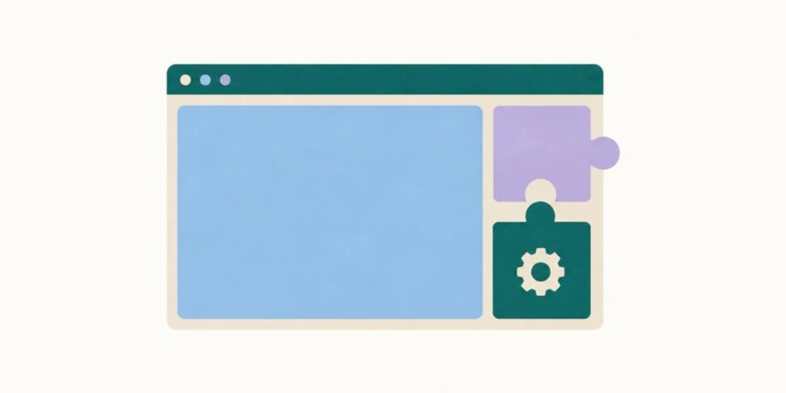
WordPress
Plugin Launch, Readme ও Repository Page: সঙ্গে ৩৯টি Brand নিয়ে এক Black Friday Roundup।
Case Study দেখুন →ইফতেখার আহমেদ সামির · Senior Content Marketing Strategist
Content Marketing-এ ৭ বছরের অভিজ্ঞতা: Content Optimization, Brand Style, AI SEO ও GEO থেকে Content Strategy, Content Creation আর Go-to-Market Strategy। পরিকল্পনা থেকে বাস্তব কাজ, দুটোতেই হাতেকলমে দক্ষতা।
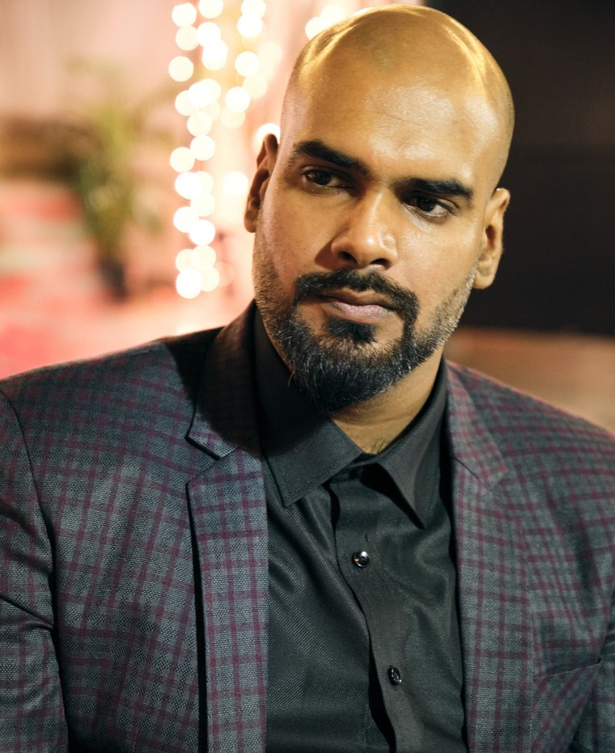
Agency ও Product Team-এর অংশ হয়ে ৫০টির বেশি Brand-এর জন্য কাজ করেছি। WordPress Plugin, স্কটল্যান্ডের Home Construction প্রতিষ্ঠান, Fashion Brand, এমনকি বাংলাদেশ বিমান বাহিনী জাদুঘরও আছে সেই তালিকায়।
এখন আমার কাজের জায়গা Search আর AI-এর সংযোগে। SEO, Keyword Research ও GEO নিয়ে কাজ করি, যাতে AI Tool-গুলোও আপনার Brand সম্পর্কে সঠিক কথাটা বলে।
এই পথেই অর্জন করেছি HubSpot-এর Content Marketing Certificate, Sync Leader Award (২০২৪) ও Team Leader Award (২০২২)।
WordPress, SaaS, Social Media, Web Analytics আর Rebranding। প্রতিটিতে কী করি, দেখুন।

Plugin Launch, Readme ও Repository Page: সঙ্গে ৩৯টি Brand নিয়ে এক Black Friday Roundup।
Case Study দেখুন →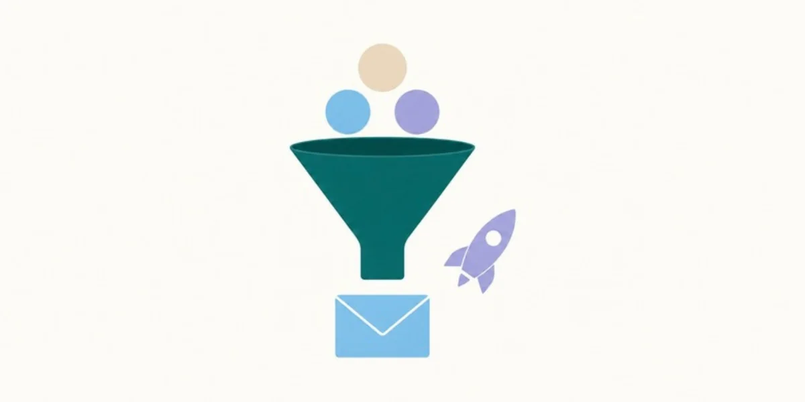
রেস্তোরাঁ, Fashion ও বিমান বাহিনীর জন্য দুই ভাষায় Post। ২০টি Brand-এর Campaign।
Case Study দেখুন →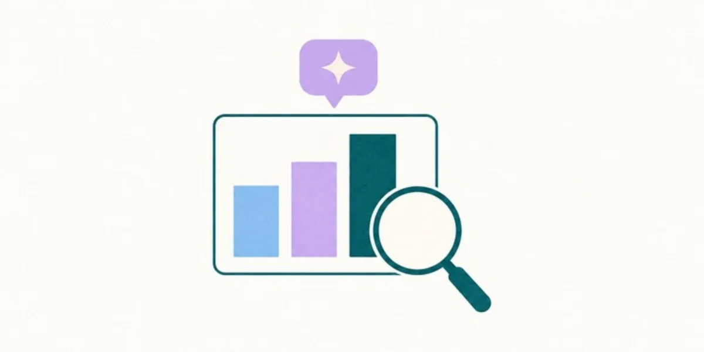
GA4, Search Console, Tag Manager, Ranking Report ও AI Citation Tracking।
Case Study দেখুন →Homepage Rewrite থেকে Brand Planning: Brand Voice, Copy আর Style-কে এক সুরে আনার কাজ।
Case Study দেখুন →Plugin Company, রেস্তোরাঁ, Agency, Fashion Brand আর বিমান বাহিনীর জাদুঘর। কাজ করেছি যাদের সঙ্গে, তাদের কয়েকটি দেখুন।
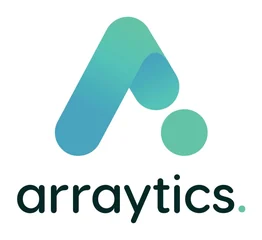
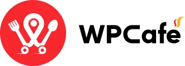
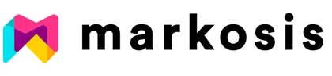
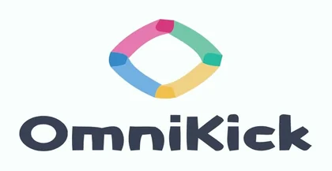
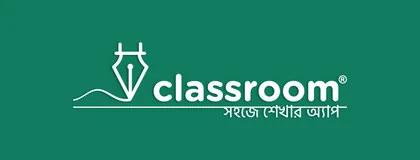
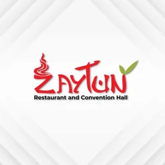
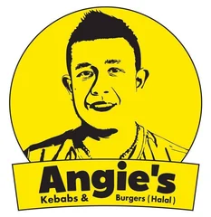
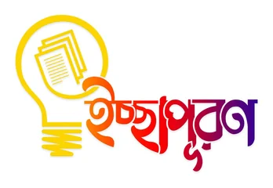
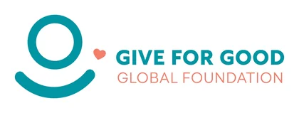
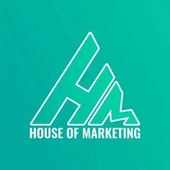
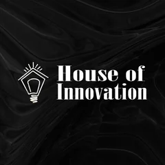
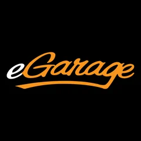
৫০টির বেশি Brand-এর মধ্যে কয়েকটি।
বাছাই করা কাজ
আগে উল্লেখযোগ্য কিছু কাজের ঝলক। তারপর তিনটি Project: একটু খুঁটিয়ে দেখার মতো।
সঙ্গে অস্ট্রেলিয়া ও বাংলাদেশের ৫টির বেশি Brand-এর Social Media Strategy।
ClassRoom Activator Programme-এ বিশ্ববিদ্যালয়ের শিক্ষার্থী
Dissertation ও Assignment লেখা, প্রতিটি ৩,০০০–৫,০০০ শব্দের
তথ্যসূত্র: CV।
দুই Platform, দুই Audience। Product Hunt-এ Maker-দের ভাষায় সোজাসাপ্টা কথা, AppSumo-তে Deal-এর পরিষ্কার হিসাব। সঙ্গে Landing Page ও Newsletter।
তথ্যসূত্র: CV, Arraytics-এ কাজের সময়কাল।
কাজের গল্পটা পড়ুন →এক Blog, দুই পাঠক: Google আর যে AI Tool-গুলোকে মানুষ এখন সরাসরি প্রশ্ন করছে। প্রতিটি Post লেখা দুই পক্ষের কথা ভেবেই।
ধানমন্ডি, গুলশান ও মিরপুরের জন্য তিনটি Price Guide। কেনার প্রস্তুতিতে থাকা মানুষের প্রশ্নের উত্তর, Google-এর Featured Snippet-এর উপযোগী করে সাজানো।
প্রতিটি Guide-এ তুলে ধরা দামের সীমা, বাংলাদেশি টাকায়।
| এলাকা | সর্বনিম্ন (টাকা/বর্গফুট) | সর্বোচ্চ (টাকা/বর্গফুট) |
|---|---|---|
| ধানমন্ডি | 14,000 | 30,000 |
| গুলশান | 17,000 | 28,000 |
| মিরপুর | 6,000 | 10,000 |
তথ্যসূত্র: angan.com.bd-তে প্রকাশিত ২০২৬ সালের দামের Guide।
Social Media, SEO, Launch, Positioning আর AI Search। প্রতিটি Case Study-তে দেখুন: সমস্যা কী ছিল, পরিকল্পনা কী করেছি, কাজ কী হয়েছে, ফল কেমন।
আপনার দরকারের কাজ খুঁজতে Chart-এর Bar বা Filter বেছে নিন।
বিয়ে ও বিভিন্ন আয়োজনের Rooftop রেস্তোরাঁর জন্য বাংলা ও ইংরেজিতে Post।
Case Study দেখুন →ঢাকায় দুই শাখার তুর্কি-বাঙালি কাবাব রেস্তোরাঁর জন্য খাবারের গল্প।
Case Study দেখুন →বিমান বাহিনীর দুইটি Official Page-এর জন্য নিয়োগ Campaign ও জাদুঘরের প্রচার।
Case Study দেখুন →Luxury Fashion Brand-এর জন্য Brand Copy, Storyboard, Script ও Photography Direction।
Case Study দেখুন →স্কটিশ শিল্পীদের একটি Network-এর Open Studios ২০২৫-এ দর্শনার্থী আনা।
Case Study দেখুন →স্কটল্যান্ডের ছোট এক শহরের দুই Construction প্রতিষ্ঠানের জন্য Local SEO ও Web Copy।
Case Study দেখুন →ঢাকার তিন এলাকার ফ্ল্যাটের দামের Guide, যাঁরা কেনার প্রস্তুতি নিচ্ছেন তাঁদের জন্য লেখা।
Case Study দেখুন →Google-এ Rank আর AI-এর উত্তরে Citation পাওয়ার উপযোগী Blog Post।
Case Study দেখুন →Audit, Ranking Report আর Keyword Gap Analysis: চার ধাপে গোছানো SEO Programme।
Case Study দেখুন →চারটি Post দিয়ে Scheduling Plugin-কে Gym ও Trainer-দের প্রয়োজনের সঙ্গে মিলিয়ে তুলে ধরা।
Case Study দেখুন →এক AI Scheduling Tool, দুই Launch, একেবারেই আলাদা দুই Audience।
Case Study দেখুন →Event Plugin-এর জন্য নতুন Homepage, আরও কার্যকর WordPress.org Listing।
Case Study দেখুন →বড় Release-এর পুরো প্রস্তুতি: Launch Post, v3 বনাম v4 Comparison, ৬২টি Screenshot ও আরও কাজ।
Case Study দেখুন →Comparison Page দিয়ে Timetics-কে Calendly, Trafft ও Appointlet-এর পাশে তুলে ধরা।
Case Study দেখুন →এক Product, কেনার দুই উপায়। কোনটি কার জন্য, এক Landing Page-এই পরিষ্কার।
Case Study দেখুন →Black Friday, Holiday, Ramadan ও Summer Deal: বারবার কাজে লাগানোর মতো এক Playbook।
Case Study দেখুন →প্রতিযোগীরা কী Release করছে, আর কখন: Changelog পড়েই সেই খবর বের করা।
Case Study দেখুন →২০১৫ সাল থেকে নয়টি Role-এ কাজ: ঢাকায় ও Remotely।
| প্রতিষ্ঠান | ভূমিকা | সময় | অবস্থান |
|---|---|---|---|
| Techabyte Solutions | Content Strategist (Contract) | নভেম্বর ২০২৫ – জুন ২০২৬ | On-site, ঢাকা |
| Connect2build Scotland | Freelance SEO Strategist | ডিসেম্বর ২০২৪ – অক্টোবর ২০২৫ | Remote |
| Woooplugin | Content Marketing Associate (Contract) | সেপ্টেম্বর ২০২৪ – নভেম্বর ২০২৪ | Remote |
| Arraytics | Senior Content Writer | মার্চ ২০২৩ – আগস্ট ২০২৪ | On-site, ঢাকা |
| Markosis Australia | Senior Copywriter ও Brand Planner | ডিসেম্বর ২০২০ – ফেব্রুয়ারি ২০২৩ | Remote |
| ClassRoom Ltd. | Project Manager | এপ্রিল ২০১৮ – ফেব্রুয়ারি ২০২০ | On-site, ঢাকা |
| OmniKick Corp. | Junior Content Marketing Executive | জুলাই ২০১৭ – এপ্রিল ২০১৮ | On-site, ঢাকা |
| Prime Research And Consultancy Center | Researcher ও Academic Writer | ফেব্রুয়ারি ২০১৬ – জুলাই ২০১৭ | Remote |
| Durbin Labs Ltd. | Contract Employee | মে ২০১৫ – জানুয়ারি ২০১৬ | On-site, ঢাকা |
কাজের প্রতিটি জায়গায় কী করেছি, কয়েকটি পয়েন্টে।
স্বীকৃতি
নিজের মূল্যায়ন, ৫-এর মধ্যে।
যে প্রশ্নগুলো আমাকে সবচেয়ে বেশি করা হয়।
আমিই। ঢাকার একজন Content Marketing Strategist। Content Rank করাই, Design করি, Website বানাই: মূলত SaaS ও WordPress Brand-এর জন্য। Samir in Marketing নামেও অনেকে চেনেন।
GEO বা Generative Engine Optimization মানে Content এমনভাবে সাজানো, যাতে ChatGPT, Perplexity ও Google-এর AI Overviews সেটি খুঁজে পায়, বিশ্বাস করে এবং উত্তরে ব্যবহার করে। মানুষ এখন Search-এর বদলে AI-কেও প্রশ্ন করছে। তাই AI-এর উত্তরের Source হওয়াটাও জরুরি। Techabyte-এ কীভাবে করেছি, দেখুন।
SEO ও GEO, Content Strategy ও Writing, Brand Style, Landing Page আর Go-to-Market Launch। WordPress Plugin থেকে রেস্তোরাঁ, এমনকি বাংলাদেশ বিমান বাহিনী জাদুঘর: ৫০টির বেশি Brand-এর জন্য এসব করেছি।
হ্যাঁ। বাংলাদেশের পাশাপাশি স্কটল্যান্ড ও অস্ট্রেলিয়ার তাসমানিয়ার Brand-এর সঙ্গেও Remotely কাজ করেছি।
শূন্য। একটা Call Book করুন, কী নিয়ে কাজ করছেন বলুন। ছোটখাটো পরামর্শ আমার পক্ষ থেকে। Paid কাজ শুরু হলেই শুধু Invoice পাবেন।
চলুন, কথা বলি
Budget নেই? কথা তো থেমে নেই। কী নিয়ে কাজ করছেন বলুন। ছোটখাটো পরামর্শ বা সামান্য Fix হলে আমার পক্ষ থেকেই। Paid কাজ হলে তবেই Invoice।
প্রশ্ন, Idea বা Project: যা মাথায় আছে, বলুন। শুনতে ভালো লাগবে।